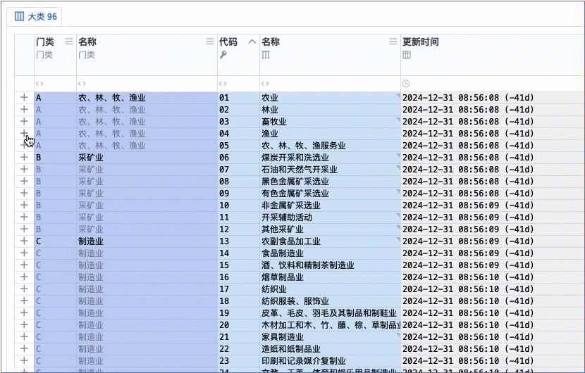
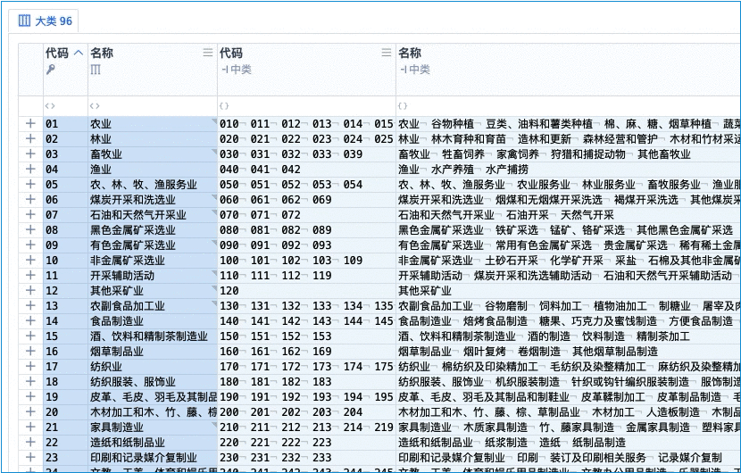
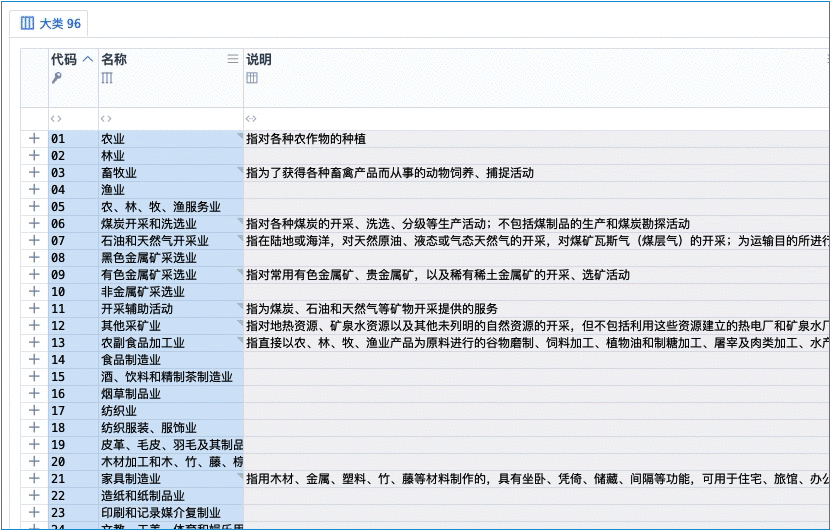
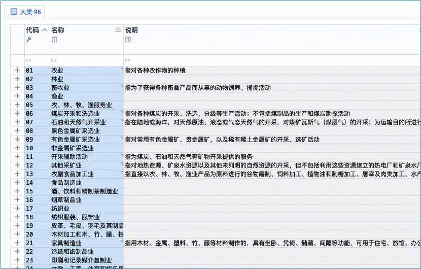

莫言剑法
简称：莫言
诗
《莫言剑法》
小楼东风庭院深，姗姗跑来学剑人。
身法如仙气凌云，一招一式皆传神。
子剑东流

雕栏破碎

穿云纵

穿云再纵

现实世界
认证机构信息管理系统 中的 「灵动」
武侠世界
江湖第一剑法
五绝：东流 · 虞莫言 的 成名绝技
虞莫言，天下第一美人，对家传剑法《虞家剑法》的发扬光大，所形成的剑法，叫《莫言剑法》
自学到什么程度
只需要知道这种灵动的表，比以前的、不灵动的那种，好太多，就行了
至于你需要按哪个快捷键，实际用的时候再琢磨、再实际的按，轻松会
术语对照
| 武学术语 | 系统术语 | 说明 |
|---|---|---|
| 莫言 | 灵动 | |
| 子剑 | 子表 | 表就是剑、剑就是表，子剑就是子表 |
| 子剑东流 | 子表在东边打开 | 左西右东，点加号在右边显示其子表 |
| 雕栏破碎 | 对多 | 雕栏破碎：破「碎片化的、一行的」，变成「整整齐齐的、多行的」 |
| 穿云纵 | 秒切换 | 主 秒切换 |
| 穿云再纵 | 第二秒切换 | 副 秒切换 |
| 剑法三绝 | 表格三绝 | 九剑（高维）、飞针（上色）、莫言（灵动） |
作者笔记
九剑、飞针、莫言，并称为：剑法三绝/表格三绝
九剑 绝在 高维（武侠世界理解为 正派武功 得道）
飞针 绝在 上色（武侠世界理解为 反派神功 专攻一点）
莫言 绝在 灵动（武侠世界理解为 江湖功夫 靠经验补不足）
九剑 + 飞针 = 视觉盛宴
莫言 = 酷炫灵动
视觉盛宴 + 酷炫灵动 = 极致舒适 · 爽
九剑 + 飞针 + 莫言 = 剑法三绝
高维 + 上色 + 灵动 = 表格三绝
| 招式 | 首拼音首字母 | 快捷键（神意夺心爪） |
|---|---|---|
| 雕栏破碎 | 雕栏的雕 Diāo D | Control + D 、 Command + D |
| 穿云纵 | 穿云的穿 Chuān C | Control + C 、 Command + C |
| 穿云再纵 | 穿云的穿 Chuān C | Control + Shift + C 、 Command + Shift + C |